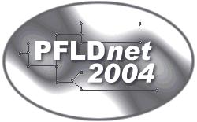

 Second
International Workshop
on Protocols for Fast Long-Distance Networks February 16-17, 2004 Argonne National Laboratory Argonne, Illinois USA |
||
|
Fast long-distance networks (i.e., networks operating at 622 Mbit/s, 2.5 Gbit/s, or 10 Gbit/s and spanning several countries or states) are now becoming commonplace. More and more researchers now routinely transfer between 10 GB and multi-TB datasets over gigabit networks. Although the network infrastructure is now in place, or will soon be, the transport and application protocols available to date perform rather poorly over such networks. Current versions of TCP, for instance, recover very slowly from packet loss when the RTT, the congestion window, and the link capacity are large. A number of research teams have begun investigating these protocol issues. Some work on simulations, others use real networks. The First International Workshop on Protocols for Fast Long-Distance Networks was very successful in bringing together many researchers from the U.S. and Europe who are working on these problems. This workshop will continue this, and provide a perfect setting for researchers in this area to exchange ideas and experience. The Third International Workshop on Protocols for Fast Long-Distance Networks will continue this tradition. In order to facilitate discussions, attendance will be limited to 60 participants. Please register early to ensure you are not left out. Depending on the number of people who register, we may need to restrict the number of people from a given organization to allow for a broader representation of the research community. Registration will open September 1, 2003. Important! Since the workshop is being held at Argonne National Laboratory (ANL), all non-US citizens MUST register at least 45 days in advance to be allowed access to ANL. Call For Presentations / Papers: Participants wishing to present a paper should send a 1-2 page extended abstract to pfldnet2004@portnoy.lbl.gov by October 20, 2003 (extended from Oct 15). Authors whose abstracts are selected for presentation will have the option to submit a full paper, to be published on the PFLDnet 2004 web site. We may try to collect the best papers for a special edition of a journal, if the authors are interested.
|